- We’re on your favourite socials!


NIT Warangal Expert's Review and Verdict
Campus at a Glance
NIT Warangal is the first among the 31 NITs established in the country and is, in fact, considered better than the new IITs in many aspects. India's former Prime Minister, Pandit Jawaharlal Nehru, laid the foundation stone for NIT Warangal on October 10, 1959. Previously known as Regional Engineering College, the institute was renamed the National Institute of Technology, Warangal in 2002. It is recognised as an institute of national importance by the Government of India. In the NIRF 2023 Ranking, NIT Warangal is ranked 53rd in the overall category and 21st in the engineering category.
NIT Warangal has a campus size of about 248 acres and offers excellent facilities for its students, staff, and faculty members. They have a central library, conference halls, centres for innovation, automation and education technology, mega hostels, health centre, canteen, shopping complex, and more, contributing to its status of being one of the best institutes of technical excellence in the nation. Currently, NIT Warangal has 13 academic departments and a few advanced research centres in various disciplines of Engineering. They offer 8 UG programs in different disciplines of Engineering, and 29 PG programs in Business Administration, Computer Application, Sciences, and Engineering. Additionally, the institute also offers a Ph.D. program in Management, Engineering, Humanities, Sciences, and Physical Education.
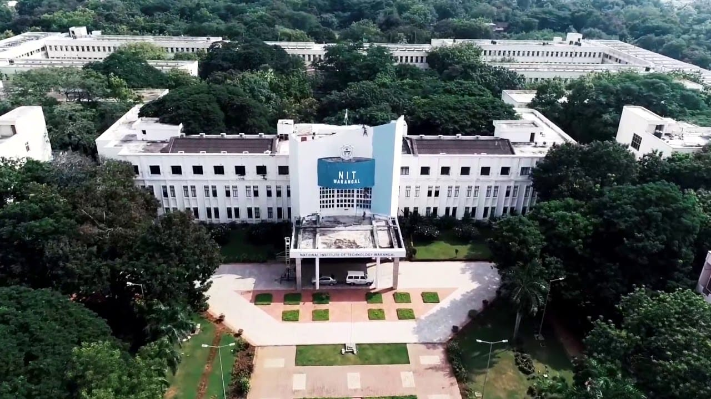
NIT Warangal is a residential institute with nearly 3,000+ students and 250+ PhD scholars. The placement record of the institute is excellent, with the overall placement rate being 82% in 2023. However, there are some drawbacks to the institute. Many students have complained that the faculty is arrogant and unwilling to help students on academic and non-academic matters. Girls studying in the first year have to be back on campus before 6 PM, and everyone else by 9 PM. The hostel mess food is also not up to the mark, as suggested by many, and the placement cell is partial towards the CSE branch as students from it get placed mostly.
Does NIT Warangal live up to its name? Through this verdict by CollegeDekho, we aim to unveil the truth about the different aspects of NIT Warangal and why you should or should not consider it.
NIT Warangal Rankings
NIT Warangal is a highly esteemed engineering institute with impressive national and international academic rankings from top-ranking organizations. Take a look at the various rankings achieved by the institute.
NIT Warangal International Rankings
- NIT Warangal has also been ranked 551-600 in the QS World University Rankings by Subject 2023: Engineering - Electrical and Electronic.
- It was ranked 401-450 in the QS World University Rankings by Subject 2023: Engineering - Mechanical, Aeronautical and Manufacturing.
- NIT Warangal's Overall ranking by US News is 1726 out of 2000 international colleges in 2022.
NIRF Rankings
Take a look at the NIRF Rankings of NIT Warangal over the past few years.
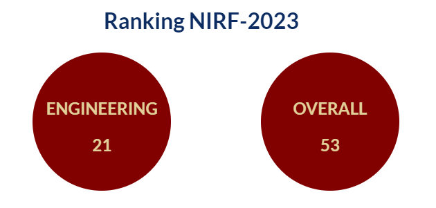
|
Parameters |
Ranking 2023 |
Ranking 2022 |
Ranking 2021 |
Ranking 2020 |
Ranking 2019 |
|
Overall |
53 |
45 |
59 |
46 |
61 |
|
Engineering |
21 |
21 |
23 |
19 |
26 |
NIT Warangal NIRF Ranking 2023: Parameter-Wise
|
Parameters |
Score Out of 100 |
|
Teaching Learning and Resources |
72.58 |
|
Research and Professional Practice |
50.86 |
|
Graduation Outcomes |
74.41 |
|
Outreach and Inclusivity |
57.19 |
|
Perception |
34.99 |
Other Rankings
- NIT Warangal B.Tech ranking by The Week is 10 out of 131 colleges in India in 2023 and it was 10 out of 216 colleges in India in 2022.
- NIT Warangal B.Tech ranking by IIRF is 43 out of 170 colleges in India in 2023 and it was 43 out of 192 colleges in India in 2022.
- NIT Warangal's Overall ranking by The Week is 13 out of 34 colleges in India in 2021.
- NIT Warangal B.Tech ranking by India Today is 40 out of 254 colleges in India in 2020.
- NIT Warangal B.Tech ranking by Outlook is 21 out of 150 colleges in India in 2019.
Our Take:
NIT Warangal has been able to retain its NIRF Ranking in the Engineering category; however, its ranking in the overall category has dropped from the last year. The institute surely needs to take a look at it if it has to improve its ranking.
NIT Warangal Academia & Batch Size
NIT Warangal offers 13 academic departments and advanced research centres in Engineering, Pure Sciences, and Management. It provides eight undergraduate and 29 postgraduate programs in five disciplines, with BTech being the flagship program with eight specializations. NIT Warangal is well-known for its Research and Development, Industrial consultancy, Continuing education, and Training programs for teachers and industrial personnel. Overall, it is an excellent educational institute that offers a diverse range of programs and opportunities for learning and growth.
Courses Offered
Here is a list of different NIT Warangal courses along with their fees and eligibility criteria.
|
Course |
Fees |
Eligibility Criteria |
|
B.Tech |
INR 2.07 Lakhs (1st Year) |
10+2 with 45% or Equivalent CGPA + JEE Main |
|
MCA |
INR 1.52 Lakhs (1st Year) |
Graduation with 60% or Equivalent CGPA + NIMCET |
|
M.Tech |
INR 1.34 Lakhs (1st Year) |
Graduation with 60% or Equivalent CGPA + GATE |
|
MBA |
INR 1.11 Lakhs (1st Year) |
Graduation with 60% or Equivalent CGPA + CAT |
|
M.Sc |
INR 79,000 (1st Year Fes) |
Graduation with 60% or Equivalent CGPA + IIT JAM |
|
PhD |
INR 97,000 (1st Year) |
Post Graduation with 60% or Equivalent CGPA |
|
B.Sc + M.Sc |
INR 2.07 Lakhs (1st Year) |
50% Marks or Equivalent CGPA in 10+2 |
Batch-Size
|
Program Name |
State/All India Seats |
Seat Capacity |
|
Bio-Technology (4 Years, Bachelor of Technology) |
Telangana |
39 |
|
Other than Telangana |
39 |
|
|
Chemical Engineering (4 Years, Bachelor of Technology) |
Telangana |
58 |
|
Other than Telangana |
57 |
|
|
Civil Engineering (4 Years, Bachelor of Technology) |
Telangana |
58 |
|
Other than Telangana |
57 |
|
|
Computer Science and Engineering (4 Years, Bachelor of Technology) |
Telangana |
68 |
|
Other than Telangana |
68 |
|
|
Electronics and Communication Engineering (4 Years, Bachelor of Technology) |
Telangana |
68 |
|
Other than Telangana |
68 |
|
|
Mechanical Engineering (4 Years, Bachelor of Technology) |
Telangana |
68 |
|
Other than Telangana |
67 |
|
|
Metallurgical and Materials Engineering (4 Years, Bachelor of Technology) |
Telangana |
39 |
|
Other than Telangana |
39 |
|
|
Electrical and Electronics Engineering (4 Years, Bachelor of Technology) |
Telangana |
68 |
|
Other than Telangana |
68 |
|
|
Chemistry (5 Years, Integrated Master of Science) |
Telangana |
10 |
|
Other than Telangana |
10 |
|
|
Physics (5 Years, Integrated Master of Science) |
Telangana |
10 |
|
Other than Telangana |
10 |
|
|
Mathematics (5 Years, Integrated Master of Science) |
Telangana |
10 |
|
Other than Telangana |
10 |
|
|
Total |
- |
989 |
Admission Process
- NIT Warangal admission to the B.Tech and M.Sc Integrated programme is based on the performance of candidates in JEE Main.
- The M.Tech programme admission is offered based on the candidate's performance in GATE followed by CCMT counselling.
- For MBA admission, candidates must appear for CAT/MAT followed by GD and PI.
- Admission to MCA at NIT Warangal is based on the performance of candidates in NIMCET followed by NIMCET counselling.
- M.Sc admission is done based on JAM score followed by CCMN counselling.
- Admission to PhD is offered based on a written test and personal interview conducted in physical mode at NIT Warangal in the respective department.
Alumni
NIT Warangal takes pride in its alumni community, which consists of over 40,000 engineers, technologists, scientists, managers, bureaucrats, and entrepreneurs. The institute owes much of its reputation as one of the premier institutes of national importance to the great pool of talented and creative alumni. Here are some of the notable alumni of NIT Warangal.
- Padma Kuppa, State Representative of Michigan's 41st House of Representatives district in the United States
- Pushmeet Kohli, Head of Research at Google DeepMind, highly cited researcher in machine learning and computer vision
- Siva S. Banda, Director of Control Science Center of Excellence and Chief Scientist for Air Vehicles Directorate at the United States Air Force Research Laboratory; elected to National Academy of Engineering; President's Award for Distinguished Federal Civilian Service in 2010
- V. V. Lakshminarayana, former Joint Director for India's Central Bureau of Investigation
- Kavuri Sambasiva Rao, Member of Parliament, India (5th term, 8th, 9th, 12th, 14th, 15th Lok Sabha
- Rao Remala, the first Indian employee of Microsoft
- Sudhir Kumar Mishra, Director General of the Defence Research & Development Organisation (DRDO)
- Shreya Dhanwanthary, Actress
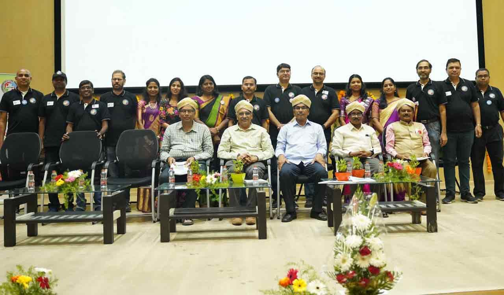
Our Take:
NIT Warangal is undoubtedly recognized for its exceptional academic excellence both in India and abroad. The institute offers a wide range of courses taught by highly qualified and experienced instructors who possess vast knowledge and expertise in their respective fields. Additionally, the institute has a vibrant research environment in which faculty members conduct innovative research in various subject areas. The institute's alumni are essential members of the NITW community in Warangal and around the world and have played a crucial role in elevating the institute's reputation to national and international levels.
However, some students are unsatisfied with their experience with the faculty members and HODs. The student-to-teacher ratio is quite imbalanced due to the large batch size, and not everyone receives equal attention. A few students have also reported that teachers who are from Telangana state are biased towards students from other states and mistreat them. A few claim that the research done by the faculty members is not genuine; all they want is to publish more and more papers that are simply copied from other papers published by renowned researchers.
NIT Warangal Infrastructure
NIT Warangal campus boasts around 100 laboratories organized in a unique functional pattern, a Central Library with state-of-the-art facilities, an Auditorium, a Student Activity Centre, a Mega Computer Centre, an Indoor Games Complex, a large stadium, Seminar Halls equipped with necessary infrastructure, and a Dispensary featuring modern facilities, among others.
Classrooms
NIT Warangal has modern classrooms and state-of-the-art facilities to facilitate effective learning. The classrooms are typically equipped with amenities like comfortable seating arrangements, audio-visual aids, projectors, whiteboards, and other necessary teaching tools. They are designed to provide a conducive environment for academic activities.
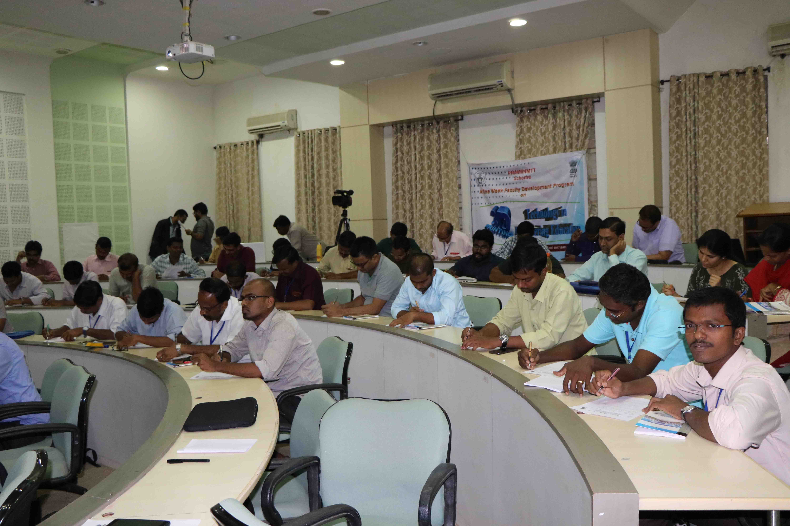
Library
NIT Warangal's Central Library is an integral part of the academic and research work on the campus. The library offers state-of-the-art facilities and innovative services to support the teaching, learning, and research activities of the Institute. It has a plinth area of 4000 sq. mts and houses around 187,014 books, e-books, technical pamphlets, standards, CD-ROMs, and Video Cassettes. The library has subscribed to 3,236 e-journals and receives 4,646 e-journals through the E-Shodh Sindhu consortium.
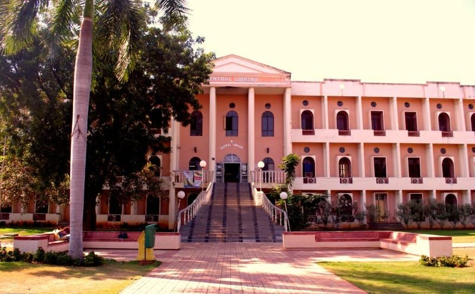
Labs
The institute has nearly 100 laboratories that support various academic and research activities across different disciplines of engineering, sciences, and technology. The computer labs are equipped with a range of computing resources, including desktops or workstations, necessary software, and internet access. They are used for programming, simulations, data analysis, and other computer-related tasks. The labs in other department has the necessary equipment for the practical application related to their fields.
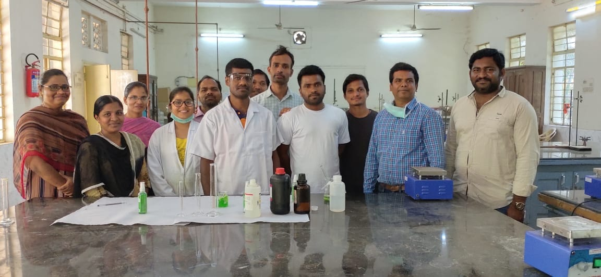
Auditorium
NIT Warangal has one of the best auditoriums among other colleges in India. It is equipped with state-of-the-art audio-visual equipment, including sound systems, projectors, screens, and lighting arrangements. This allows them to host a variety of events, including convocations, seminars, conferences, workshops, cultural events, and performances.
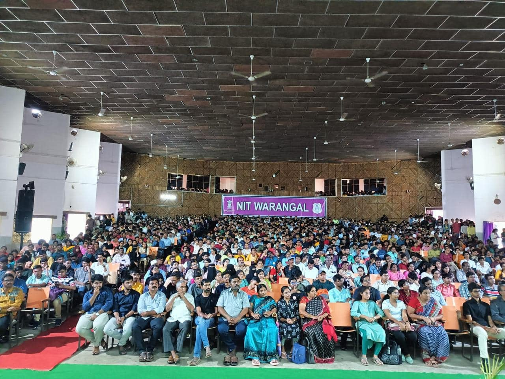
Hostels
The institute provides excellent residential facilities for all students. There are twenty hostel blocks for men, two for women and one for international students. The Ultramega Hostel accommodates approximately 1800 students with two students sharing a room. It is allotted to first-year B.Tech and M.Tech students. The hostel has a gym, a table tennis room, a coffee shop, and a snack corner. It also has 8 lifts and two badminton courts on the lawn. With 10 floors, there are TV rooms located on alternate floors.
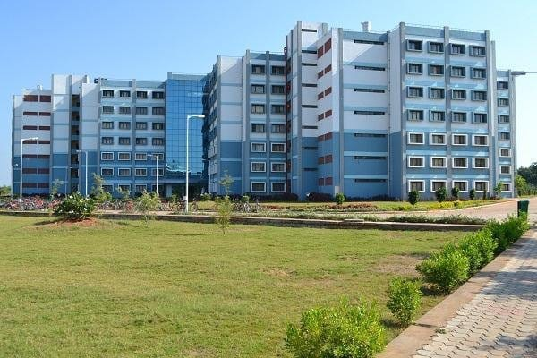
The Mega Hostel can accommodate up to 1000 students, with only one student per room, and is allotted to 3rd and final-year B.Tech students. The hostel has 7 floors and lifts, and there is a football ground beside it. The boy’s hostel fee ranges from INR 9,900 to 22,000, depending on the type of block and room, while the girl’s hostel fee ranges from INR 9,900 to 14,400.
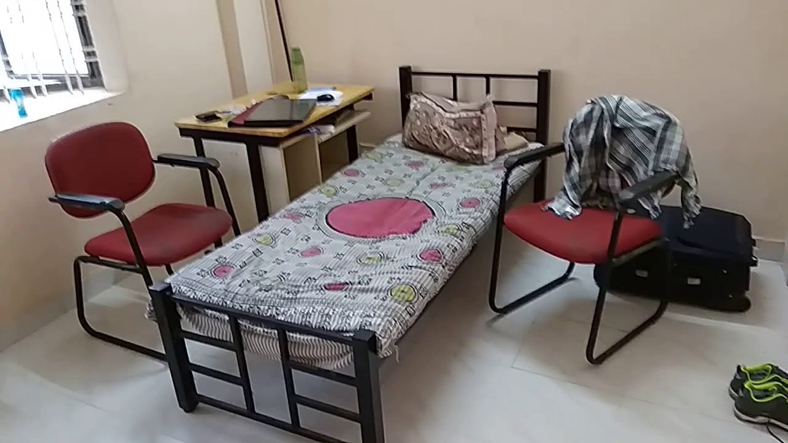
Messes
The hostel has a total of seven messes, including five for boys, one exclusively for girls, and a mega mess with modern facilities for boys, foreign students, and girls. The men's hostels have two non-vegetarian messes run by the government on a 'no profit - no loss' basis. These messes cater to the diverse tastes of students from all regions of the country.
Canteens & Hang-outs
NIT Warangal has 2 canteens- A new NIT Canteen and a Staff Canteen that serves good quality food. There are three Institute Food Courts which are running on a contract basis for the men’s hostels.
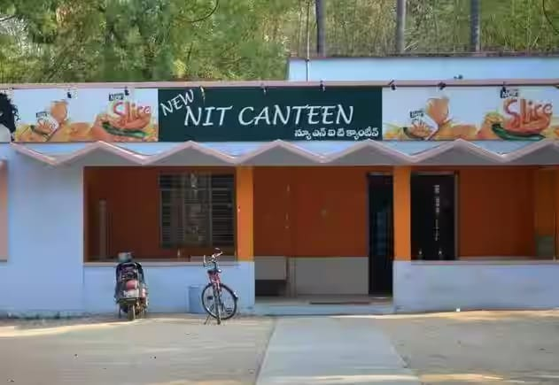
Other Facilities
- Health Centre
- Banks/ ATMs
- Post Office
- Guest House
- Sports Facilities
- Shopping Complex
- Shuttle Service
- Gymnasium
- Salon
- Laundry Shop
Our Take:
The infrastructure of NIT Warangal may be old, but it still meets the expectations of students. Students truly enjoy their time here and learn many things beyond books. The institute’s campus has everything for students and staff to meet their daily needs. Many students here own a bicycle to commute from hostels to classrooms and other areas as the NIT Warangal campus aims to be pollution-free and doesn’t allow motor vehicles. However, as is the case with almost every institution, the quality of hostel food is not good always. Students often eat in canteens and restaurants outside the campus. The timing restriction in hostels is also one major concern for students here.
NIT Warangal Internships & Placements
NIT Warangal provides different types of placement and internship opportunities to students studying in their final year. Let’s take a look at what the institute offers.
Internships
NIT Warangal is known for its strong emphasis on practical learning and provides various opportunities for internships. Students can undertake internships in a wide range of industries and sectors, including engineering, technology, research, management, and more. Internship durations can vary widely depending on the program and the specific requirements of the company or organization offering the internship. They can range from a few weeks to several months.
Placements
NIT Warangal has a strong track record of placements, with a high percentage of students securing job offers from reputed companies. It has a dedicated Placement Cell known as the Centre for Career Planning & Development (CCPD) that works towards facilitating placements for its students. This cell acts as a liaison between the institute, students, and the recruiting companies. Check the NIT Warangal placement statistics below.
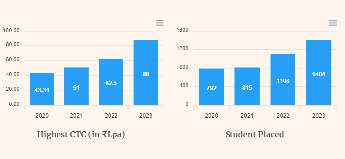
Placement Highlights 2022-23
|
Particulars |
Placement Statistics 2023 |
Placement Statistics 2022 |
|
Highest Package |
INR 88 LPA |
INR 62.50 LPA |
|
Average Package |
INR 17.29 LPA |
NA |
|
Median Package |
INR 12.6 LPA |
NA |
|
Students Placed |
1,400 |
1,132 |
|
Offers Made |
1,400+ |
1,132+ |
|
Placement Rate |
82% |
78% |
|
No. of Companies Visited |
268 |
221 |
B.Tech Placement Statistics 2023: Branch-wise
|
Branch |
Students Placed |
Highest Salary |
Average Salary |
|
Civil Engineering |
56 |
INR 15.0 LPA |
INR 8.06 LPA |
|
Electrical & Electronics Engineering |
94 |
INR 51.0 LPA |
INR 15.38 LPA |
|
Mechanical Engineering |
92 |
INR 25.8 LPA |
INR 9.02 LPA |
|
Electronics & Communication Engineering |
105 |
INR 43.0 LPA |
INR 14.49 LPA |
|
Metallurgical & Materials Engineering |
43 |
INR 15.0 LPA |
INR 8.63 LPA |
|
Chemical Engineering |
73 |
INR 46.0 LPA |
INR 9.87 LPA |
|
Computer Science & Engineering |
118 |
INR 43.0 LPA |
INR 20.02 LPA |
|
Bio-Technology |
33 |
INR 13.7 LPA |
INR 8.75 LPA |
Our Take:
The placement rate for NIT Warangal during the year 2023 was 82%. A total of 268 companies visited the campus and 1,400 students were recruited. The top recruiters included leading companies such as Amazon, Microsoft, and L&T. However, many students believe that the placement cell at college favours CSE students and doesn't pay much attention to those from other branches and departments. Some students have also claimed that the placement data shared by the college is not entirely accurate, and the number of placed students is less than what is shown.
NIT Warangal Diversity Representation
NIT Warangal is committed to fostering a diverse and inclusive environment. This includes efforts to ensure representation from various backgrounds, including gender, ethnicity, socioeconomic status, and more. Here are some aspects of diversity representation at NIT Warangal:
-
Like many technical institutes, it has a higher representation of male students. However, there have been initiatives and programs to encourage more female students to pursue technical education. These efforts include scholarships, mentorship programs, and awareness campaigns.
-
NIT Warangal admits students from various states across India. This naturally leads to a diverse student population with different cultural backgrounds, languages, and traditions.
-
The institute provides opportunities for students from diverse socioeconomic backgrounds. This includes scholarships, financial aid, and support services to ensure that financial constraints do not hinder access to education.
-
As per government regulations in India, a percentage of seats are reserved for students from Scheduled Castes (SC), Scheduled Tribes (ST), Other Backward Classes (OBC), and Economically Weaker Sections (EWS). This helps in ensuring representation from historically marginalized communities.
-
The institute admits students from various countries, contributing to international diversity. These students bring different perspectives and experiences to the campus community.
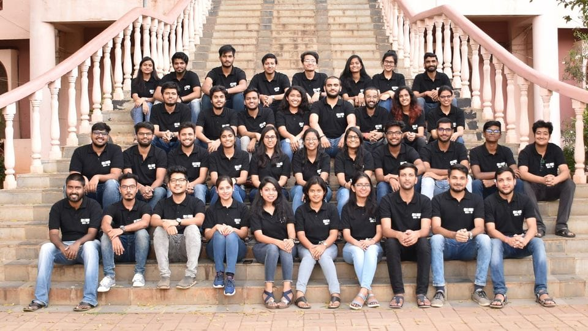
Our Take:
The male-to-female ratio in the institute is quite poor and the administration surely needs to take some measures to create a balance. Also, at the international level, the college doesn't have much recognition and the number of students outside India is quite low. A few students outside the Telangana state have shared that the faculty is quite partial to them.
NIT Warangal Management/ Administration
NIT Warangal has a well-defined management/administration structure, which is quite typical of higher education institutes in India. The structure comprises of various positions such as Chairman, Director, Deans, Head of Departments, Registrar, Administrative Officers, Senate, Faculty and Staff, Student Council, and more. The institute aims to provide an environment that nurtures innovation, incubation, creativity, and excellence among its faculty and students towards achieving sustainable development goals. It emphasizes student-centric education with interdisciplinary research and development for the benefit of industry and society.
Our Take:
NIT Warangal is dedicated to achieving higher levels of technical excellence and developing a socially relevant yet internationally appropriate curriculum. The institute adopts innovative and effective teaching methodologies and prioritizes the healthy development of its scholars. However, many students feel that the administration should pay more attention to their concerns so that they can focus on their studies without unnecessary stress. The hostel timings are a major issue for students, and the management should take steps to address this problem.
NIT Warangal Location
NIT Warangal is located in Kazipet, Warangal, Telangana, India. To reach the campus, one can take a 2.5-hour drive on Hyderabad-Warangal National Highway 202 or travel by train or cab from Rajiv Gandhi International Airport in Hyderabad, which takes around 2.5 hours by road and 2 hours by rail. The campus is located near two railway stations, Kazipet and Warangal, with Kazipet being the most preferred choice due to many trains passing through. Kazipet Railway Station is just 3 km away while Warangal Railway Station is 12 km away from the campus.
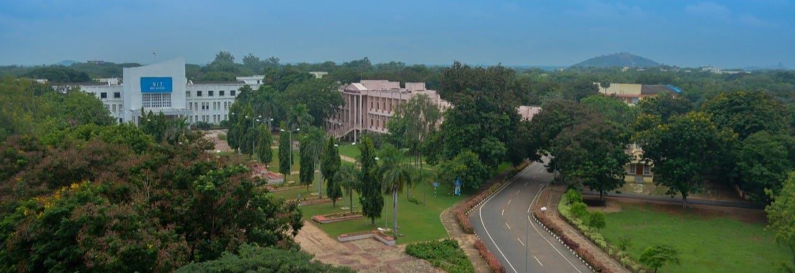
Warangal holds a unique position in the cultural and historical landscape of the Telangana state. Its remarkable and intricate architecture in Ramappa, Thousand Pillar Temple, Badrakali Temple, and the Warangal Fort have been the centre of attraction for tourists. Furthermore, the beautiful gardens, wildlife sanctuaries, lakes, and rocks in the vicinity are other places of interest for students to explore. The place enjoys a pleasant climate throughout the year, except for a few patches of hot summer in May-June. There are multiple restaurants and hangout places outside the campus where students can unwind and have a great time.
NIT Warangal Expectation vs Reality: CollegeDekho Verdict!
NIT Warangal is widely recognized for its dedicated faculty, staff, and state-of-the-art infrastructure that creates a healthy learning environment. Throughout the year, NIT Warangal organizes various technical and cultural activities. The Technozion (technology festival), SpringSpree (culture festival), and Cura (management festival) are some of the important annual events. Additionally, every year, the inter-branch competition in cultural activities known as Zero Gravity is organized, which adds a competitive edge to the festivities.
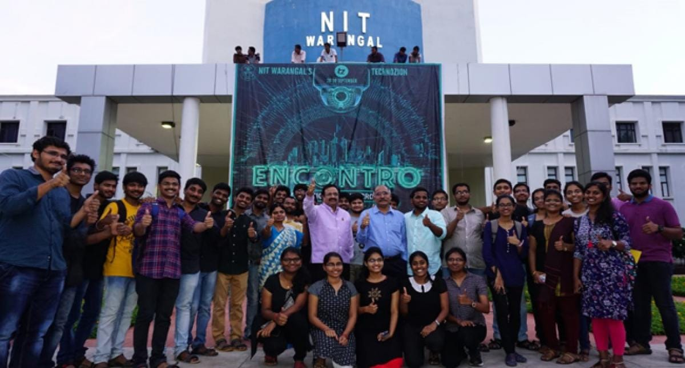
The institute also houses the Web and Software Development Cell (WSDC), which is a group of students responsible for creating and maintaining the institute's website. They also take care of other tasks such as semester registrations, online feedback, online attendance, and online mess and hostel allotment (OMAHA). In addition to this, NIT Warangal has an Innovation Garage, which is a 24-hour, multidisciplinary innovation workspace maintained by students. This workspace provides students with access to the newest equipment, technology, and gadgets to fuel their innovative ideas. The Lakshya Foundation and the institute collaborated on this project.
The CSE department of NIT Warangal is considered one of the best in India and is on par with many IITs. However, there is a need for improvement in terms of placements for other branches and departments. Also, the management should focus on enhancing the condition of hostels. Overall, NIT Warangal is a good option for students who want to pursue engineering and secure an excellent placement offer.
Final Review Checkbox!
|
Yay! |
Nay! |
|
Huge Campus |
Restricted Timings in Hostels |
|
Good Infrastructure |
Dirty Washrooms in Girls Hostel |
|
Affordable Fee Structure |
Average Food in Messes |
|
Favourable Location |
Rude Faculty |
|
Qualified Faculty |
Strict Administration |
|
Good Placements |
Average Placements Except for CSE |
|
Excellent Library |
|
|
Good Reputation |
|
|
Good Hostels |
|
|
All Sports Facilities |
|
|
Banks/ ATMs Inside Campus |
|
|
Shuttle Service |
NIT Warangal Reviews and Rating
Why to choose NIT Warangal?

4.2
(19 Verified Reviews)
Share your college experience
Earn unlimited cash rewards  Earn up to ₹10 for every approved college review. Refer your friends to write reviews and earn ₹10 for each of their approved reviews too.
Earn up to ₹10 for every approved college review. Refer your friends to write reviews and earn ₹10 for each of their approved reviews too.

Student Feedback and Rating on NIT Warangal
Enrollment : 2017 | Dec 02, 2025
Overall Rating of the University
Overall My overall experience at this college has been truly rewarding. The campus offers a positive learning environment with supportive faculty who are always ready to guide students beyond academics
Placement The placement opportunities at our college are quite impressive and improving every year. The dedicated placement cell works tirelessly to connect students with top companies and provides continuous support through training sessions, mock interviews
Infrastructure The college offers impressive infrastructure that supports both academic and extracurricular growth. Classrooms are spacious, well-ventilated, and equipped with smart boards for interactive learning.
Faculty The faculty at our college truly stands out for their dedication and expertise. Most professors are highly qualified and bring a great mix of academic knowledge and real-world experience into the classroom.
Hostel The hostel provides a comfortable and secure environment for students. Rooms are well-maintained with proper ventilation and regular cleaning. Each room has essential furniture like a bed, study table
Enrollment : 2024 | Sep 14, 2024
NIT Warangal -oldest NIT
Overall NIT W- NIT W is one of the most prestigious institutes in INDIA known for its technical education. NIT W is the oldest NIT established in year 1959 and hence has a strong alumini network.
Placement We have a placements cell that take care of placements and internships. stats-CSE avg-30lpa;ECE avg-23 lpa; EEE avg-21lpa; major recruiters are google , Microsoft, qualcom, oracle, nvidea, micron etc.
Infrastructure College has a great insfrastructure which get renovated in regular interval of time . NIT W campus is beautiful and its specific departments has all the required equipment in lab etc .
Faculty Faculties here are great , as a matter of fact , NIT W is known for its faculties.Proffesors are helpful and supporting with all of them having PhD is their respective fields.we also have scholars with great knowledge of lab
Hostel Hostels rooms are very stiff and washrooms require direct renovation . but it has gym and table tennis rooms in the hostel. talking about mess , food is just fine .
Enrollment : 2019 | Aug 27, 2024
National Institute of Technology, Warangal
Overall The best thing about this course in this institute is that it has a well-designed course curriculum, syllabus, and well-experienced professors. There is lot of festivals and fest happens.
Placement The average salary package offered is around 7-8 LPA in reputed companies such as Deloitte, TCS and Schneider. Compared to the fee for this course, it is a very good value for money.
Infrastructure Our college provides the best facilities and expert faculty who create an easy optimal learning environment and motivate towards studies. Labs are well-equipped,
Faculty Teachers are well-knowledgeable and qualified, and they go beyond the curriculum to help us to be ready for the industry. They frequently motivate and inspire students. They teach well and have masters as their qualification.
Hostel Hostel provides Accommodation. Mess food is quite good and taste is too good. Menu is changed in monthly. Rooms are air conditioner with with ventilation.
Enrollment : 2027 | Jun 11, 2024
Ground reality of NIT Warangal
Overall It is the oldest NITs of the India. It had all the basic facilities that is required for the student. You got good placement, great campus life and many more things here in the college
Placement The placement is nit Warangal is beta among all the NITs of India. Each year many companies visit the campus for recruitment. Last year the highest package is 88 lakhs . The overall average of college is around 15lpa.
Infrastructure As it is the oldest NITs so infrastructure present here is old but still I'm the good condition. Each department have their separate building to accomodate their work.
Faculty The teachers of NIT Warangal are highly qualified from various top colleges of world such as NITs, IITs, IISC Bangalore and many more. The main focus of faculties is to deliver the course content complete to the student.
Hostel There are separate hostel present for boys and girls. For the first year boys , you got the largest hostel of Asia that is 1.8k hostel. Later you got shifted to 1k . For girls there is priyadarshini hall of residence for first year students
Enrollment : 2024 | Apr 05, 2024
NITW The Renowned NIT
Overall The overall college life is good with a decent no of placements,internships college fests like the Tech fest and the Cultural fest which takes place in the months of February and April.
Placement The campus placements are on a high level The packages will be high compared to the other colleges and the companies like Google, Microsoft will offer the jobs related to coding The respective core jobs like Texas,Tata and Qualcomm will also offer jobs
Infrastructure The infrastructure in our College is very good. The buildings are constructed with new tech technology power saving equipments and all the high technology advancement used in the college
Faculty The professors who teach in our College are highly educated in renowned IIT's and also help the students by motivating us and bringing the zeal in our hearts to study and grow up in life
Enrollment : 2024 | Mar 15, 2024
NIT Warangal College review
Overall Overall the college is good and would stand among top 3 NITs considering the placement and internship opportunities it provides. But a lot of infrastructure can be improved like hostels to develop the overall well being of students. The environment is good in the campus as you would get to connect with some of the top brains across the country. Overall NIT Warangal is a great choice especially for engineering students to excel in their career.
Placement Placements for circuit branches like CSE,ECE,EEE and MCA are too good and can be compared to IITS. Average package of these branches will be above 20 lakhs where as for other branches it will be around 10 to 15. You also get to sit for core companies for placements. Also there are number of public sector undertakings for mechanical civil and chemical branches that offer really good package. Most of the top companies will not allow all branches but only circuit branches are allowed. People take up various roles like Software, Hardware, Consulting, Analytics , Management and also teaching
Infrastructure Many department buildings are too old as it a old nit. But the metallurgy and biotech department buildings have very good infrastructure. some Hostel building are yet to be renovated. The infrastructure is still being developed to be on par with the new colleges and institute is being equipped with lots of facilities.
Faculty Faculty here are really good and supportive and all of them hold at least a post doctoral degree in their respective fields. The have strong knowledge about the subject they teach. All the professors encourage students to come up with new ideas to contribute to research. The exam papers are also very well set by the faculty and covers all the topics that were taught. Most of the faculty will be friendly outside of the academics but some are strict when it comes to academics.
Hostel Hostel facilities for 2nd and 1st years are good as they are given blocks. But for the 3rd and 4th years they allot in 1k hostel whose facilities are not really good but manageable. Hostel food (mess food) is manageable. Most of the times there would be water shortage in the hostels. 3rd years has to share a 2 seater room and in final year you will be given a 2 seater room.
Enrollment : 2022 | Mar 05, 2024
Good choice for better career
Overall It's a good choice for better career but the facilities are very poor. Faculties are not up to the mark. Very huge politics. Coming to the positive side, you can find very good people here. You can find so many best friends here. Below average college in terms of all other facilities.
Placement Placements are too good. We have so many opportunities with minimum package to be very better compared to other colleges. Most of the cse, ece, eee students will get placed within first 1 or 2 months of beginning of the placements season.
Infrastructure Few buildings like innovation garage, metallurgical and material science engineering, chemical engineering buildings are too good. Especially CSE people don't have proper/sufficient number of class rooms.
Faculty Here few faculty are very good but Majority of them are too bad in teaching, just reading from slides. They won't care about students and especially for btech projects in final years, they treat students like dogs and don't care the hardwork the student does.
Hostel We have different kinds of hostels like 1K for 3rd and 4th year btech students and 1.8K for 1st year btech and mtech students and blocks for 2nd year btech students.
Enrollment : 2022 | Mar 05, 2024
Good choice for better career
Overall It's a good choice for better career but the facilities are very poor. Faculties are not up to the mark. Very huge politics. Coming to the positive side, you can find very good people here. You can find so many best friends here. Overall it's a good college in terms of securing good career but below average college in terms of all other facilities.
Placement Placements are too good. We have so many opportunities with minimum package to be very better compared to other colleges. Placements are very good and satisfiable here.
Infrastructure Few buildings like innovation garage, metallurgical and material science engineering, chemical engineering buildings are too good but other buildings are too bad. Especially CSE people don't have proper/sufficient number of class rooms.
Faculty Here few faculty are very good but Majority of them are too bad in teaching, just reading from slides. They won't care about students and especially for btech projects in final years, they treat students like dogs and don't care the hardwork the student does. Worst faculty ever in my life.
Hostel We have different kinds of hostels like 1K for 3rd and 4th year btech students and 1.8K for 1st year btech and mtech students and blocks for 2nd year btech students. Overall the facilities are too bad.
Enrollment : 2024 | Mar 05, 2024
This is the reason why people chooose this campus
Placement In terms of placements, NITW is best. It stands on par with NIT trichy (or maybe even better). Interviews and OTs are conducted fairly and CCPD tries to get almost all the best companies with better CTC too.
Infrastructure Some of the newly constructed buildings are at top-notch. But the old ones mainly the cse building is too bad. This campus is truly photogenic, it looks good in photos, but in reality not that good in reality.
Faculty Most of the faculty are good. And few of them are actual reason why the college has such placement recors. But rest are worst. So, just be careful with their ego.
Hostel Boy's hostels require renewal badly. The blocks in which they accomodate 3rd years are worst. Other hostels look good. But many rooms get very low mobile signals always and it feels like rural area (which are actually far better).
Enrollment : 2024 | Feb 20, 2024
best college for placements
Overall I love the college and teaching of the faculty was so good and experience of the faculty be shared for us.The application process is offline.The student should get qualify in JEE MAINS exam.
Placement There are many placements for the students.Like many big companies like amazon, flipkart etc come and visit our campus.They conduct many annual fests like spring spree and technozian.
Infrastructure The infrastruture of the college is soo good.We have many blocks for every branch.We have ground for sports events.We have seminar halls for to attend webinars and all.We also have digital classrooms.
Faculty Faculty was too good and the teaching style of the faculty is very good.They ae just awesome. They motivate us like anything.They encourage in every aspect.
Hostel There are many hostel facilities for both boys and girls.The hostel block for boys are very large compared to other colleges.In hostel the mess food is too good.
Top Courses at NIT Warangal
Related Questions
Dear Student,
There is a good chance of getting NIT or IIIT with 93 percentile marks in the OBC category. However, getting the most sought-after courses, like CSE at top NITs, will be challenging but you will definitely get lower-ranked NITs and IIITs with 93 percentile marks in JEE Mains 2025. We hope that we have answered your query successfully. Stay tuned to CollegeDekho for the latest updates related to education, counselling, admissions and more. All the bets for your great future ahead!
Dear Student,
NIT Warangal offers various national as well as international internship opportunities for its students in the Biotechnology program. The students get a chance to do their internship in top-notch companies such as CitiCorp, Works Application, Think & Learn Pvt. Ltd, etc. at the highest stipend of 80,000.
You can also fill the Common Application Form on our website for admission-related assistance. You can also reach us through our IVRS Number - 1800-572-9877.
Dear Student, as the JEE Main 2020 merit list is yet to be released by the National Testing Agency (NTA), there is no information available regarding the JEE Main 2020 opening and closing ranks for B.Tech admission at the National Institute of Technology (NIT) Warangal. It would have been much more helpful if you had included the following details in your question -
-
Your JEE Main 2020 score
-
Your category
-
If you belong to the “Home State” category or not
-
Which B.Tech specialisation are you interested in
We request you to please provide us with the aforementioned details so that at least we can give you a tentative idea regarding whether or not you can apply for B.Tech admission at NIT Warangal based on the previous year’s JEE Main opening and closing ranks. You too can find out the previous year’s JEE Main opening and closing rank (Category-Wise) for B.Tech admission at NIT Warangal through the given link - NIT Warangal JEE Main Cutoffs. You can also find out your tentative JEE Main 2020 rank with the help of the following link - JEE Main Rank Predictor Tool. After finding out your tentative rank, you have to click on the previous year’s JEE Main cutoff link and you will get a tentative idea about your chances of securing admission into your favourite B.Tech specialisation offered at NIT Warangal.
Dear student,
This depends on whether or not you can meet the eligibility criteria for scholarships provided at NIT Warangal. To avail merit-based scholarships, you must have scored over 9.1 CGPA in the first semester of your programme. You JEE Main rank also determines your eligibility. The college offers scholarships to students with JEE Main rank equal to or less than 2,000. You can also get a scholarship based on your total annual family income. It must also be notified that the institute does not award more than one scholarship to one student even if the candidate is eligible for more than one scholarships.